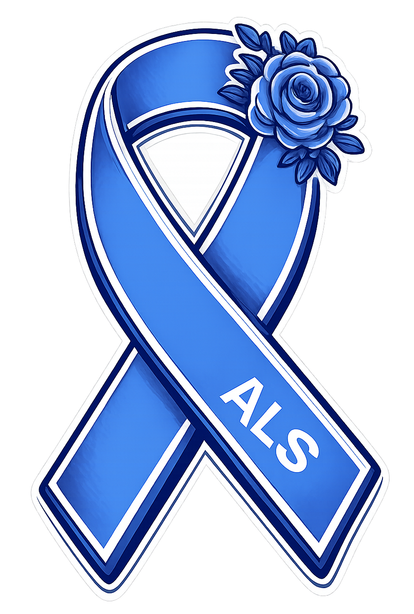

Living Fully, Living Well
Welcome! This website was developed by a clinician-led team from Johns Hopkins, in partnership with experts from the International Neuropalliative Care Society (INPCS) ALS Working Group, with the goal of providing a centralized, accessible, and clinician-curated ALS palliative care resource navigator. To get started, click on a button below.
